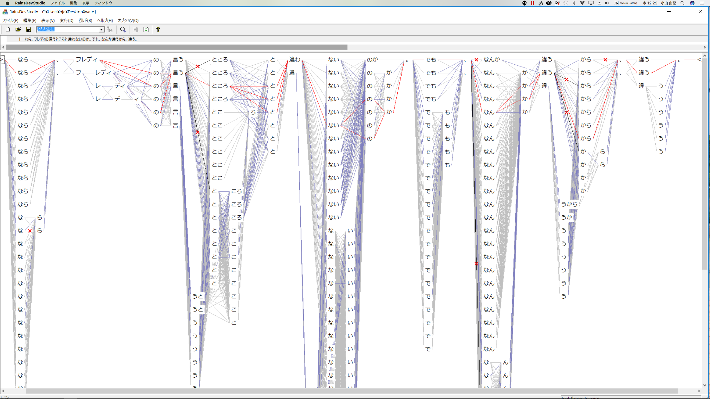
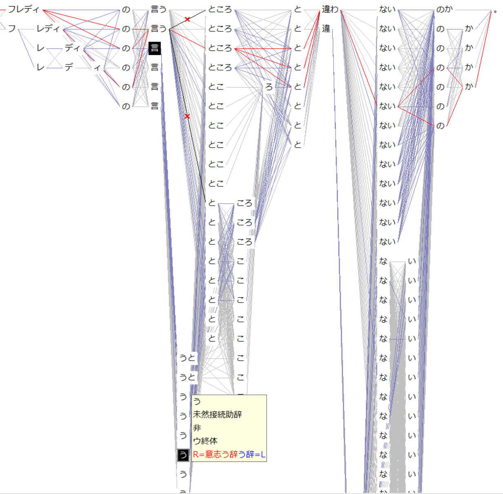
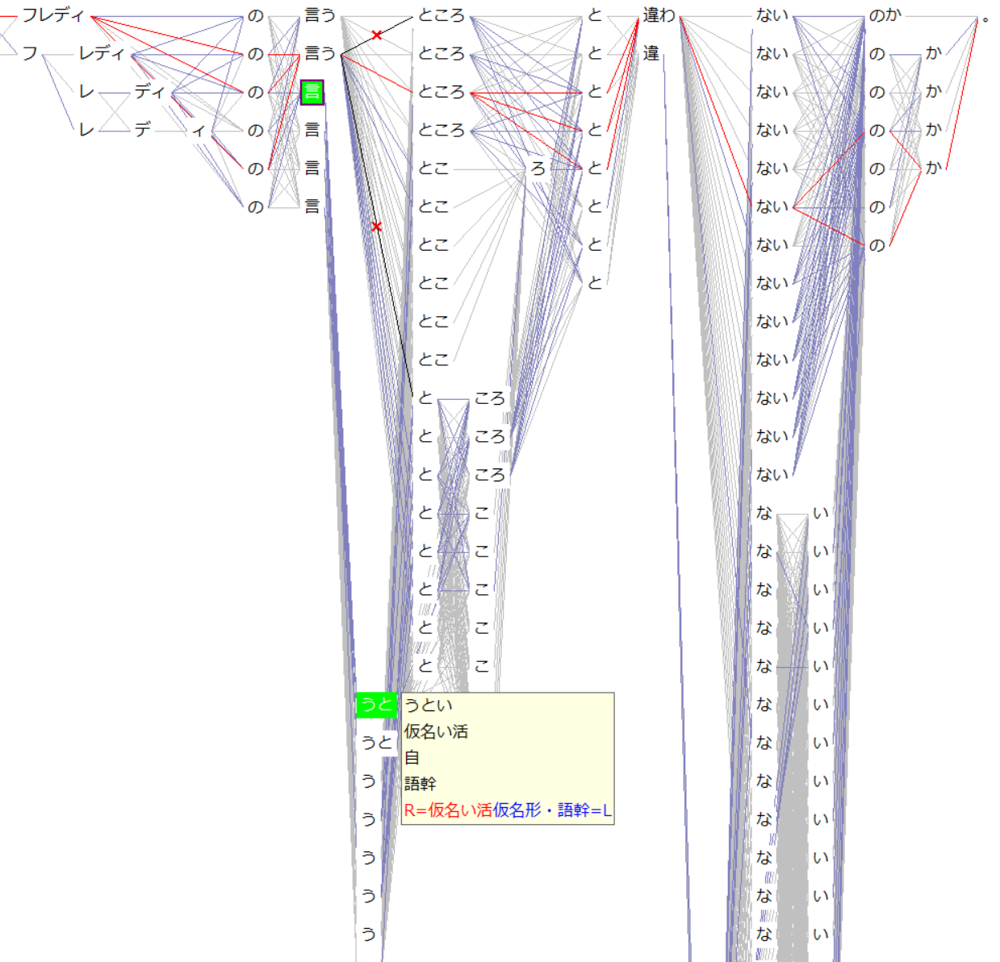
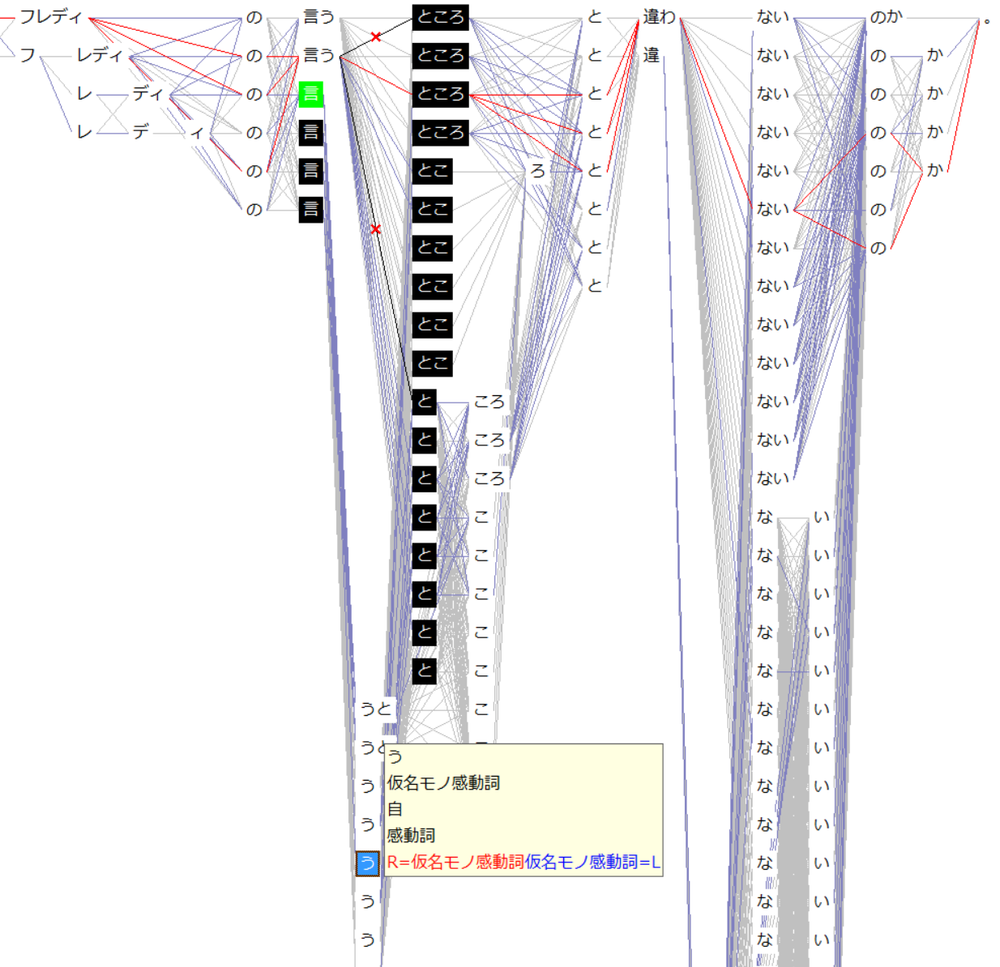
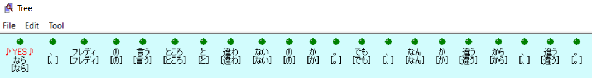
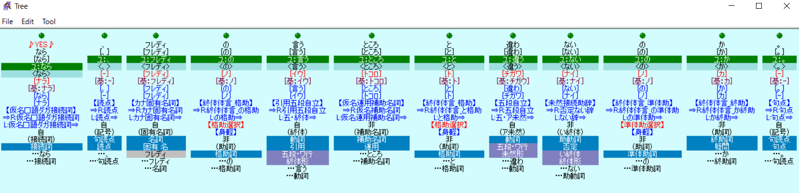
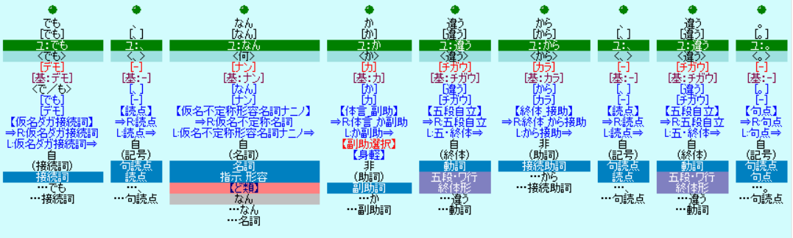
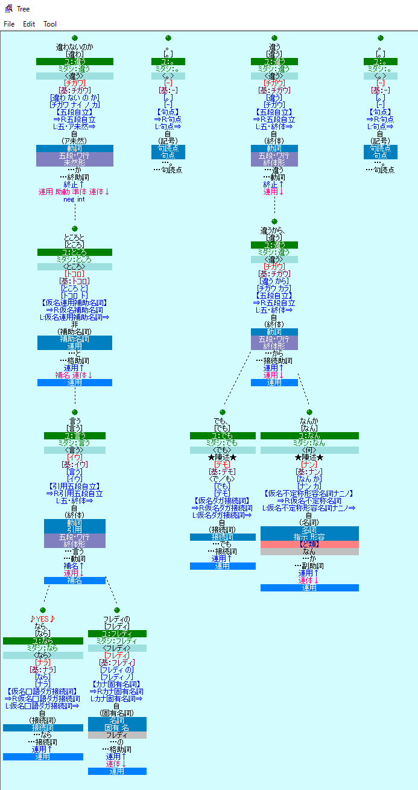

よく知らないものを研究するグループに、二年いて、なんとなくこんなものではないかと思うに、どうも、マイニングというからには、言葉の海だか山だかの中から、資源や宝を見つけることのように思われる。
言葉に貴賤はないが、市場調査や世論調査などをするためには、テーマを想定したり、枝葉末節を捨てたりして、言葉を取捨選択し、テキストをより抽象化して、統計分析やグラフ化する工程が、欠かせない。
「watersの作り方」動画を見た友人フレディの、次のような感想を契機として、この十五年何をやってきたか、説明する。
うーん、違う。
どう違うのか、説明できるか？分からないが、やってみよう。
なら、違う。
フレディ言うところの「音素として意味は分からないが」どう切れるか、辞書を片っ端から当てると、次のようになる。

「違うよ→違えよ、は隣接して同義な派生語である、とかか？」ということではなく、
上記の例なら、「言／う／と」や「言／うと」と切れるとき、
「言（を俟たない、というときの『言』単漢字の自立名詞）」、「一文字感動詞『う』」、「意志や推量の助動詞『う』」、「引用助詞か格助詞か並立助詞か接続助詞の『と』」、「『うとい』の形容詞語幹」などとなるといった解釈が成り立つが、



など、二つの語が隣り合う可能性を調べ、隣接許可をしたり、制限をつけて許可したりすること。
隣り合う可能性を探る手がかりとなるように、辞書を作る際に、その語彙の、前後にある語に対する「立ち位置（耳障りな表現だがぴったり合うかも）」を辞書に記載しておく。
たとえば、動詞の未然形、カナ名詞、アラビア数字に接続するとか、読点、漢字固有名詞、呼称接尾名詞、順接接続助詞が後続するとか。
そのようにして、隣接する可能性を、局所的に大局的に調べては許可していく。
つまり、

ただし、同じ切れ方をしても、それぞれの形態素に解釈が複数成り立つこともある。
たとえば、「なら」は、接続助詞か接続詞か、「の」は、所有格の格助詞、主格の格助詞か、体言に準ずる助詞か、疑問を表す終助詞か、など。
それらを決定するのが、構文解析の第一段階、形態素解析の「後処理解析」で、このフェーズで、選択した形態素に、次のように、品詞などの辞書情報を付与する。


そして、辞書情報を基に、以下のように「文節」にまとめ、

そして、次に、構文解析の第三段階の「変形解析」で、文や文節の関係や意味合いを示す。
用例として挙げた、
「なら、フレディの言うところとは違わないのか。でも、なんか違うから、違う。」
という文を、
「前文を受けて、伏せ字の「フレディ」が、「言う」のと、「違う」の否定。前文とは逆接の関係で、曖昧だが、「違う」という理由で、「違う」。」
と解釈して、出力したりする。
三つの方針とは、最長一致（より長い形態素を選ぶ）、最少分節（一文の中で形態素数をより少なく切る）、機能語優先（自立語ではない助詞や助動詞や接頭詞や接尾辞などの形態素を優先的に選ぶ）の三つ。
それ以外、辞書を作ったり、隣接可能性をチェックしたり、さらに、プログラムによる三つの方針にあてはまらない数ある例外を処理し、複数の可能性を一つに絞り、文節をまとめ、係り受けを決め、より抽象的な表現や属性を抽出するルールを、果てしなく書くのは、人手。
人工知能はどこにも使われていない。わたしの目と手と天然知能による。
もうひとつ、「音素解析（音声を音素として意味は分からないが正確に母音と子音と無発音に分解して並べる）を文字（文章）にする時の推測エンジンのデータベースなの？」でもない。
音声認識の結果を文字にしたものについて、watersで解析して、それをテキストマイニングで活用し、「お客様の声を集約する」とか、「特殊なクレームをピックアップする」とか、そんなふうに使われることはあるだろうが、音声認識をするために作られたデータベースではない。
何らかのデータベースに必要な情報を付与した語彙や係り受けや属性を、データベースの作り手に提供するソフトウェアである。
watersを動かすのに必須の「辞書やルールなどのデータ」を十五年かけて作ってきた。ちなみに、この動画では、watersそのものではなく、watersのデータを作り込むためのツールを紹介している。
辞書を管理するために、windowsアプリを使ったり、様々な解析ルールを作って結果を検証するために、waters独自のプログラムを書いたりすることになるが、それらは、使っているうちに使えるようになる。
あとは、文法知識と言葉への憧憬さえあればいい。だから、言葉が好きな人なら誰にでも、watersを作れるんじゃないかなぁと常々思っているのだが。